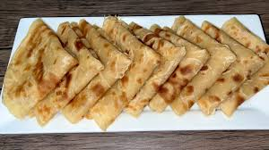

Home

Chapati
Description
Chapati is a type of unleavened flatbread that is a staple in East African cuisine.
It is made from simple ingredients and cooked on a hot griddle, resulting in a soft and slightly chewy texture.
Ingredients
- 2 cups all-purpose flour
- 1/2 teaspoon salt
- 3/4 cup water
- 2 tablespoons oil or melted butter
Instructions
- In a large mixing bowl, combine the flour and salt.
- Gradually add water and oil, mixing until a soft dough forms.
- Knead the dough on a floured surface for about 5-7 minutes until smooth and elastic.
- Cover the dough with a damp cloth and let it rest for at least 30 minutes.
- Divide the dough into 8 equal portions and roll each portion into a ball.
- On a floured surface, roll out each ball into a thin circle, about 6-8 inches in diameter.
- Heat a griddle or skillet over medium-high heat. Cook each chapati for about 1-2 minutes on each side, or until golden brown spots appear.
- Remove from heat and keep warm. Serve hot with your favorite dishes.